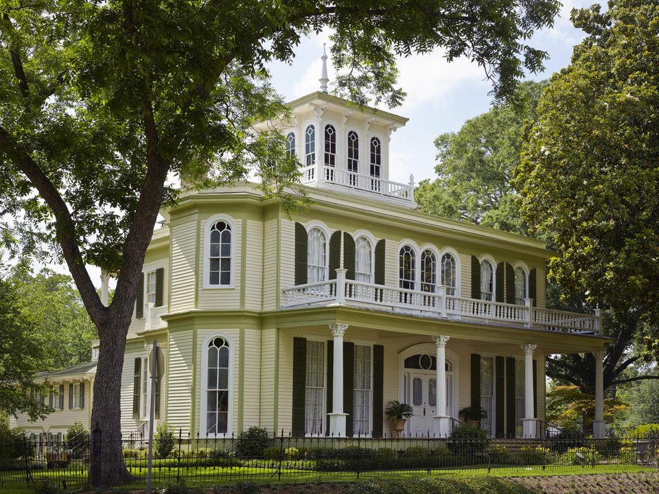

Downtown · Historic hotel
The Excelsior House
An 1858 hotel that has hosted presidents and Oscar Wilde.
Official details for The Excelsior HouseBrick streets and a cypress swamp.
Jefferson was once one of the busiest river ports in Texas, sending cotton by steamboat to New Orleans, and its brick streets, Victorian homes and antique shops still recall the 1870s. Land at Cypress River Airport, stay at the 1858 Excelsior House, walk the historic district, and drive 20 minutes to Caddo Lake, a maze of bald cypress trees draped in Spanish moss that is best seen by boat or paddle.

Time illustration: direct distance at 150 KTAS plus 15 minutes for departure and arrival, matching the discovery page. Use ForeFlight for your actual flight plan.
24F, Cypress River Airport, is a non-towered public airport at 222 feet with a 3,200-foot runway, a few minutes from downtown Jefferson.
Cypress River Airport, Jefferson, TX
A short runway with birds and deer on and near the field; 100LL only. Arrange a ride ahead. No live fuel price is shown.
Texas flying: hot, bumpy summer afternoons with pop-up thunderstorms; spring severe weather (hail, tornadoes and squall lines) from March to June; gusty south winds; and low morning stratus that spreads inland from the Gulf. About 770 nm from Myrtle Beach: plan a fuel stop and three nights.
Rates and availability need travel dates.
An 1858 hotel that has hosted presidents and Oscar Wilde.
Official details for The Excelsior HouseB&Bs in historic homes.
Travel Texas for More places to stayReserve weekend dinners.
East Texas barbecue in town.
Official details for Joseph’s Riverport Bar-B-QueCafés and restaurants in Jefferson.
Travel Texas for More restaurantsCaddo Lake is best early in the morning.
This prototype links to the local visitor site. It does not yet match events to your travel dates.
Tours of historic homes.
Travel Texas for Historic pilgrimageParades and a Mardi Gras ball.
Travel Texas for Mardi Gras UpriverCypress trees turn rust-red on Caddo Lake.
Texas Parks & Wildlife for FallCheck the local calendar when choosing a weekend, and confirm dates and tickets with the organizer.
A sample Jefferson weekend. Plan three nights for the flight. No bookings or availability confirmed.
Land at 24F mid-morning.
Lunch downtown.
Caddo Lake, then back to the airport.
Land at 24F, subject to weather and your actual flight plan.
Walk the historic district.
Barbecue at Riverport.
Caddo Lake by boat or kayak.
Antique shops downtown.
Dinner in town.
A historic home tour.
Return the car and allow time at the FBO.
Texas afternoons bring heat, bumps and storms; leave in the morning.
Caddo Lake by boat.
Antique shops.
Barbecue at Riverport.
These details make the difference between an appealing list and a usable getaway.
Lodging and a ride from the airport.
About 770 nm from Myrtle Beach: a long day.
3,200 feet; plan accordingly.
March to May and October to November.
Research-based selections, not personal-visit endorsements. Researched November 1, 2026. Confirm hours, prices and availability directly with each place before booking. Spotted something out of date, or have a favorite we missed? Email us at hello@wingawayweekends.com.
WingAway Weekends helps you discover the destination. Use ForeFlight and current official aviation information for route, performance, weather, NOTAMs and preflight decisions. Flight planning and PIC responsibility stay with the pilot.